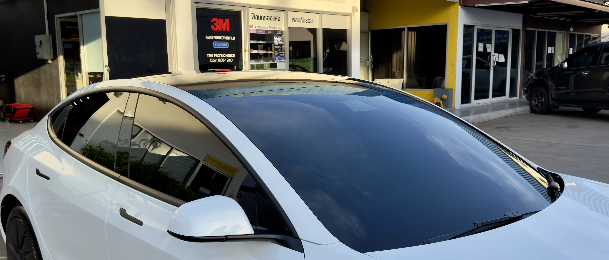
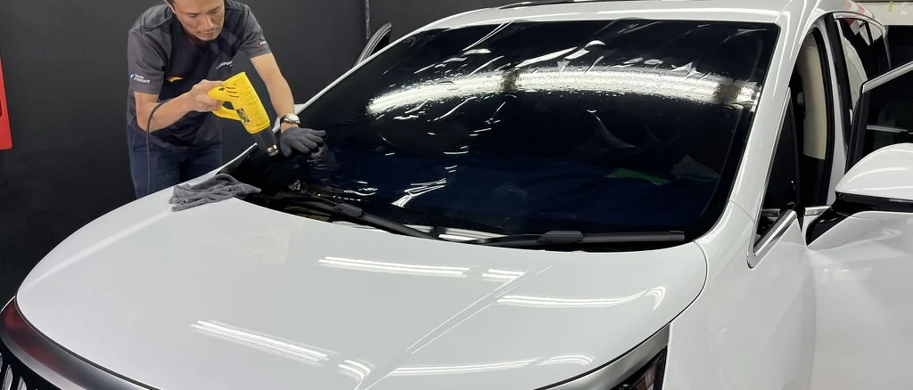

กลางวัน
ให้บรรยากาศในรถที่ยังโปร่งสบาย เหมาะกับผู้ที่ไม่ต้องการฟิล์มโทนมืด แต่ยังอยากได้ comfort จากฟิล์มเซรามิก
POSITIONING
ถ้าคุณต้องการให้รถยังดูสว่าง โปร่ง และมองออกสบาย แต่ยังอยากได้แนวคิดของฟิล์มเซรามิกที่ช่วยเพิ่มความสบายในการใช้งานจริง IR25 คือเฉดที่นุ่มและใช้งานง่ายที่สุดในซีรีส์นี้
เฉดนี้เหมาะกับคนที่ไม่ชอบฟิล์มเข้มจัด ต้องการบรรยากาศในรถที่ยังดูเบา และให้ความสำคัญกับการมองเห็นที่สบาย โดยเฉพาะการใช้งานช่วงเย็นหรือกลางคืน

WHY IR25
IR25 เหมาะกับผู้ที่อยากได้ความโปร่งมากกว่าเฉดอื่นในซีรีส์ และไม่ต้องการให้รถดูเข้มหรือทึบเกินไป
แม้จะเป็นเฉดที่โปร่งกว่า แต่ยังคงแนวคิดของฟิล์มเซรามิก ที่ช่วยให้การใช้งานจริงรู้สึกสบายขึ้นกว่าฟิล์มพื้นฐานทั่วไป
เพราะการมองเห็นยังคงรู้สึกเบาและเป็นธรรมชาติ จึงเหมาะกับคนที่ใช้งานรถในช่วงเย็นหรือกลางคืนเป็นประจำ
WHO IT IS FOR
IR25 เหมาะกับผู้ที่ต้องการฟิล์มในโทนโปร่ง ไม่ต้องการความเป็นส่วนตัวระดับสูงแบบเฉดเข้ม แต่ยังต้องการให้รถใช้งานสบายและลดความรบกวนจากแสงแดดได้ดีขึ้น
มักเหมาะกับรถครอบครัว รถใช้งานประจำวัน ผู้ที่ชอบลุครถสะอาดโปร่ง หรือผู้ที่ต้องการความมั่นใจเรื่องการมองเห็นช่วงกลางคืน
SPECIFICATION
| รายการ | IR25 |
|---|---|
| Visible Light Transmission (VLT) | 25% |
| Glare Reduction | 65% |
| Total Solar Energy Rejected (TSER) | 61% |
| Infrared Rejection (IRR) | 90% |
| IR Energy Rejection (IRER) | 67% |
| UV Rejection | 99.9% |
| Construction | Metal-free Ceramic Film |
ตัวเลขใช้เพื่อช่วยเปรียบเทียบเฉดภายในซีรีส์เดียวกัน ส่วนผลลัพธ์จริงควรดูร่วมกับกระจกรถเดิมและลักษณะการใช้งานประจำวัน
REAL-WORLD USE

ให้บรรยากาศในรถที่ยังโปร่งสบาย เหมาะกับผู้ที่ไม่ต้องการฟิล์มโทนมืด แต่ยังอยากได้ comfort จากฟิล์มเซรามิก

เป็นหนึ่งในจุดเด่นของเฉดนี้ เพราะการมองออกยังรู้สึกสบาย จึงเหมาะกับผู้ที่ขับช่วงเย็นหรือกลางคืนเป็นประจำ

เหมาะกับรถที่ต้องการฟิล์มโทนเบา สุภาพ ใช้งานง่าย และยังคงบุคลิกรถที่ดูสะอาด โปร่ง ไม่ทึบเกินไป
THINGS TO CONSIDER
ถ้าคุณต้องการภาพมองออกที่เบา สบาย และเป็นธรรมชาติ IR25 จะตอบโจทย์มากกว่าเฉดที่เข้มกว่า
เพราะเฉดนี้ถูกออกแบบให้โปร่งกว่า จึงเหมาะกับผู้ที่ยอมรับระดับ privacy ที่เบาลงเพื่อแลกกับ ease of use ที่มากขึ้น
ถ้าคุณต้องการรักษาบุคลิกรถให้ดูโปร่ง สุภาพ หรือไม่อยากให้รถดูมืดทึบ เฉดนี้จะเหมาะกว่าตัวเลือกที่เข้มกว่า
COMPARE NEARBY SHADES
IR25 โปร่งกว่า มองสบายกว่า และเหมาะกับผู้ที่ไม่ต้องการฟิล์มเข้มระดับกลาง ส่วน IR15 จะให้ความเป็นส่วนตัวมากกว่าและเป็นจุดสมดุลของซีรีส์
IR25 อยู่คนละบุคลิกกับ IR05 อย่างชัดเจน เพราะ IR05 เน้นความเข้มและ privacy ส่วน IR25 เน้น ease of use และความโปร่ง
ถ้าคุณรู้ชัดว่าไม่ต้องการฟิล์มเข้ม และต้องการเฉดที่ดูสบาย ใช้งานง่าย IR25 คือคำตอบที่เหมาะที่สุดในกลุ่มนี้
RELATED PAGES
สำหรับผู้ที่ต้องการเฉดกลางที่สมดุลระหว่างความเข้ม ความสบาย และการใช้งานทุกวัน
สำหรับผู้ที่ต้องการเฉดเข้มและความเป็นส่วนตัวสูงขึ้นอย่างชัดเจน
ดูภาพรวมของซีรีส์ Ceramic Ultra Clear และแนวทางเลือกเฉดทั้งหมด
สำหรับผู้ที่ต้องการขยับไปยังฟิล์มระดับบนที่เน้นความ refined และภาพรวมพรีเมียมมากขึ้น
INSTALLATION QUALITY
ฟิล์มโทนโปร่งต้องการงานติดตั้งที่สะอาดและเก็บรายละเอียดดี เพราะลักษณะของฟิล์มจะทำให้ภาพรวมของกระจกและขอบงานดูชัด
เราจึงให้ความสำคัญกับทั้งการเตรียมกระจก ความสะอาดของงาน และการเลือกเฉดให้เหมาะกับการใช้งานของรถแต่ละคัน เพื่อให้ผลลัพธ์ออกมาดูเบา สะอาด และใช้งานได้จริง

CONSULTATION
แจ้งรุ่นรถ การใช้งานกลางวัน/กลางคืน และระดับความโปร่งที่คุณต้องการ เราจะช่วยดูว่า IR25 เป็นเฉดที่เหมาะที่สุด หรือควรขยับไป IR15 หรือ IR05
ปรึกษา / นัดหมายติดตั้ง